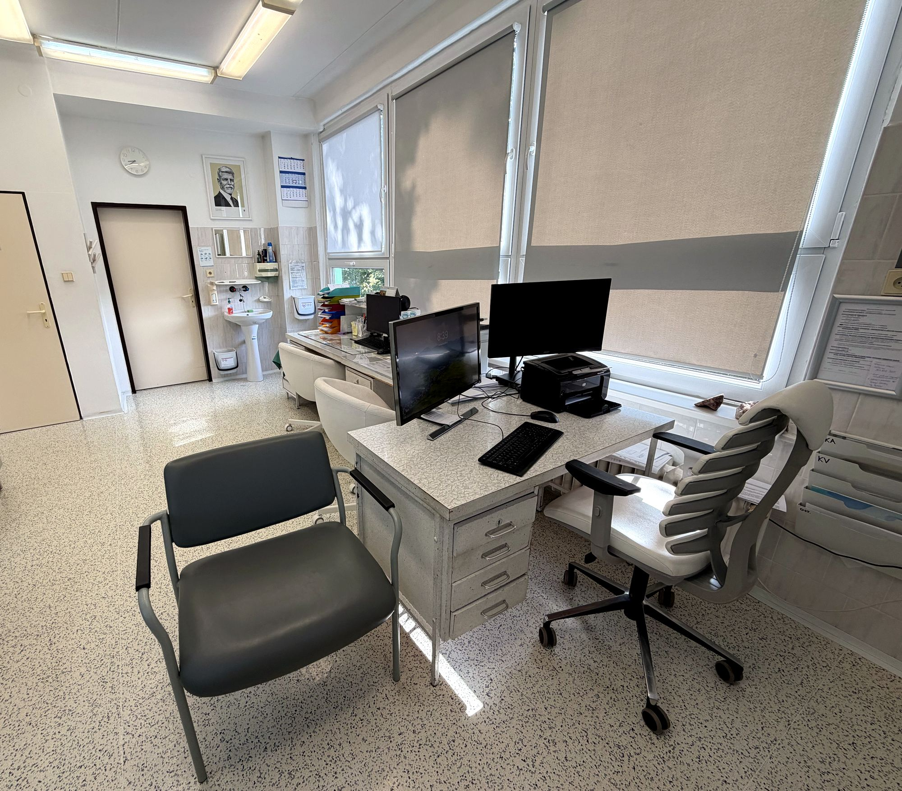
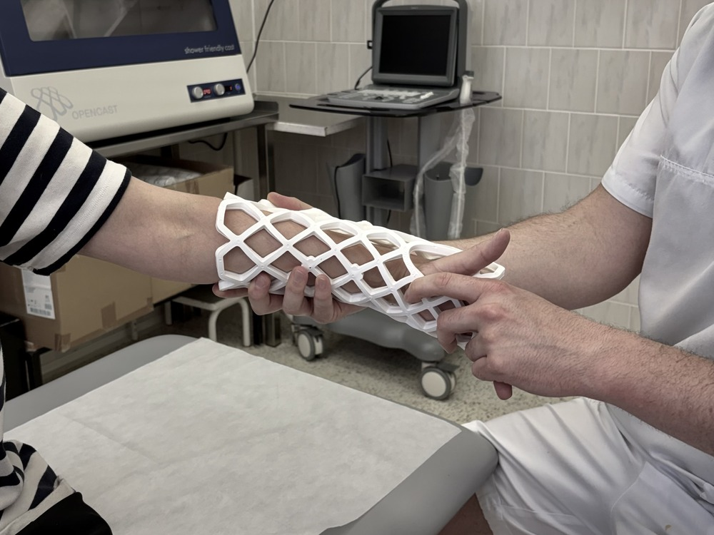

Omezená ordinační doba v červenci
Vzhledem k častějším dovoleným věnujte, prosím, zvýšenou pozornost aktuální ordinační době v červenci. V některých dnech je provoz ambulance omezen.
Ortopedická ambulance Klášterec nad Ohří
Specializovaná péče
o pohybový aparát.

Aktuality
Vzhledem k častějším dovoleným věnujte, prosím, zvýšenou pozornost aktuální ordinační době v červenci. V některých dnech je provoz ambulance omezen.
Omlouváme se, ale z technických důvodů momentálně nefunguje online objednávkový formulář. Pokud se chcete objednat na vyšetření, napište nám na info@sorelia-ortopedie.cz nebo zavolejte na 725 148 051. Děkujeme za pochopení.
V případě volných kapacit budete v ambulanci MUDr. Antonína Pultara, vždy ve středu mezi 15–17h, ošetřeni i bez objednání.
Na termínu vyplnění formuláře pojistné události nebo trvalých následků se domluvte telefonicky nebo osobně vždy ve středu mezi 9–12 h s MUDr. Josefem Zimou.
Do naší ordinace dochází protetik pan Roman Prošek. Pokud máte poukázku na individuálně zhotovené vložky do bot, můžete se s ním domluvit na vyšetření na telefonu 777 162 380.
Ordinační hodiny
Tým

OpenCast
OpenCast je moderní odlehčená fixace, která pacientům pomáhá zvládnout běžný den s větším komfortem. Je vhodná i pro sprchování a koupání, takže méně omezuje hygienu, volný čas i pobyt u vody.
VZP poskytuje pojištěncům do 18 let příspěvek až 1 500 Kč na odlehčené sádry a fixace ze svého podpůrného programu. Aktuální podmínky najdete na stránkách VZP.
Kontakt
| Po | 12:00–18:00 |
| Út | 9:00–19:00 |
| St | 9:00–19:00 |
| Čt | 8:00–12:30 |
| Pá | Ordinační doba po domluvě |